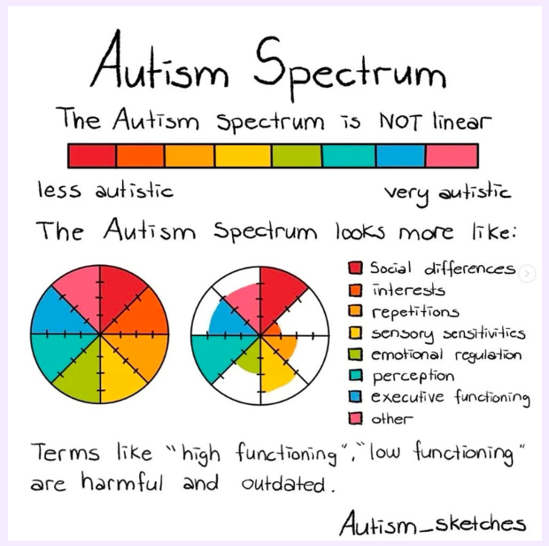
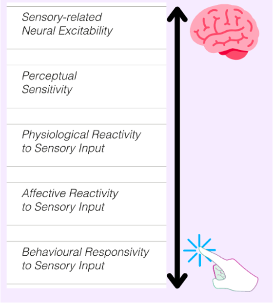
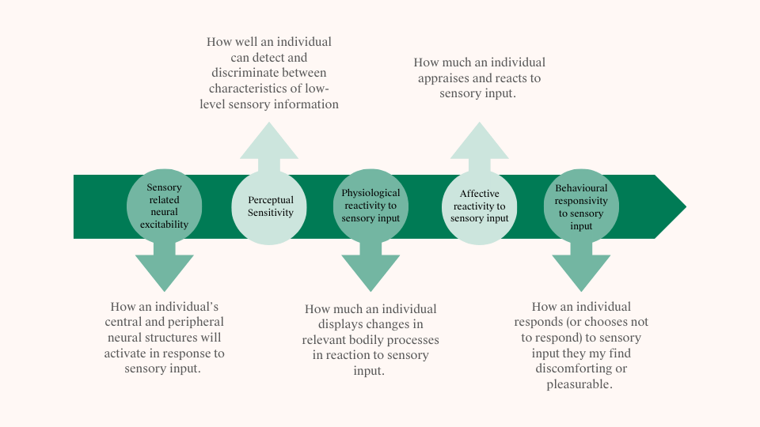
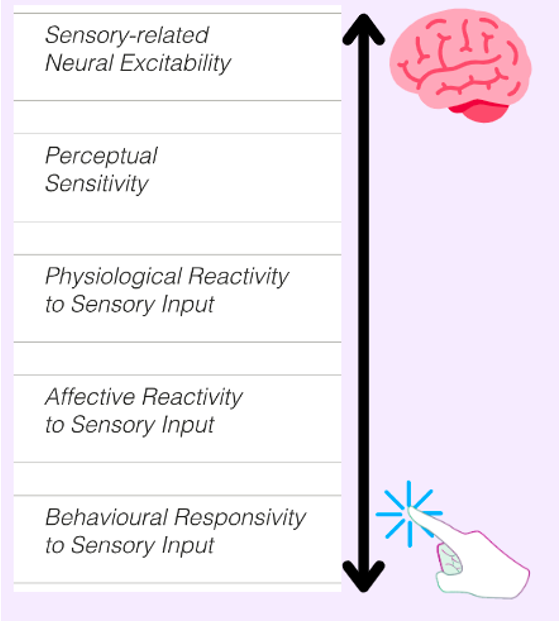
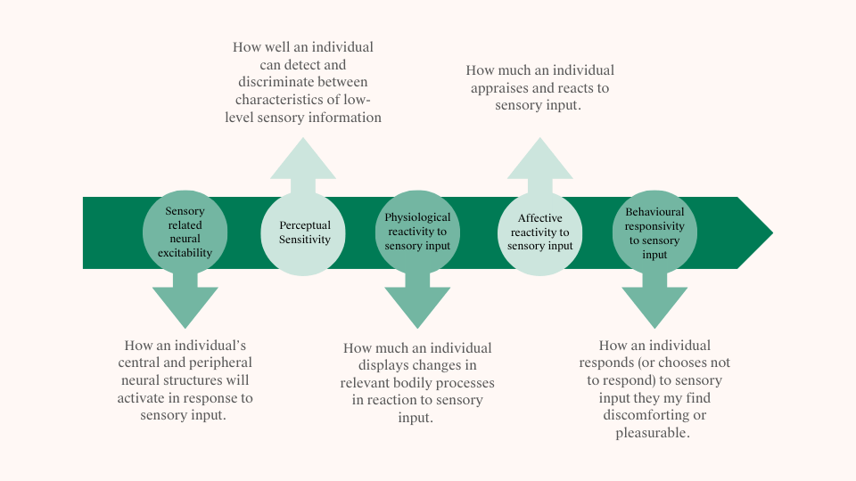

What is Autism?
Autism is a neurodevelopmental condition characterized by differences in social communication, sensory processing, and patterns of behavior. It represents a natural variation in human neurodiversity, affecting how individuals perceive, process, and interact with the world around them.

Recent research emphasizes viewing autism through a neurodiversity lens, recognizing it as a difference rather than a deficit. This perspective acknowledges the unique strengths and challenges that come with being autistic.
Sensory Processing
Sensory processing refers to how our nervous system receives, organizes, and responds to sensory information from our environment and our bodies. This includes:
- Visual information (sight)
- Auditory information (sound)
- Tactile information (touch)
- Proprioceptive information (body position)
- Vestibular information (movement and balance)
- Interoceptive information (internal bodily sensations)

Sensory Differences
Autistic individuals often experience sensory information differently from non-autistic individuals. These differences can include:
- Hyper-sensitivity (heightened responses to sensory input)
- Hypo-sensitivity (reduced responses to sensory input)
- Sensory seeking behaviors
- Sensory avoiding behaviors
 



Anxiety
Anxiety is more prevalent in autistic individuals compared to the general population. This increased prevalence may be related to:
- Sensory overwhelm
- Social communication differences
- Difficulty with uncertainty
- Executive functioning challenges
Research on Sensory Differences and Anxiety
Recent research has highlighted the significant relationship between sensory processing differences and anxiety in autistic individuals:
- Sensory sensitivity often correlates with increased anxiety levels
- Sensory avoidance behaviors may develop as a coping mechanism
- Environmental modifications can help reduce anxiety
- Individual differences in sensory processing impact anxiety presentation
References
- Green, S. A., & Ben-Sasson, A. (2010). Anxiety disorders and sensory over-responsivity in children with autism spectrum disorders: Is there a causal relationship? Journal of Autism and Developmental Disorders, 40(12), 1495-1504.
- Lidstone, J., et al. (2014). Relations among restricted and repetitive behaviors, anxiety and sensory features in children with autism spectrum disorders. Research in Autism Spectrum Disorders, 8(2), 82-92.
- South, M., & Rodgers, J. (2017). Sensory, emotional and cognitive contributions to anxiety in autism spectrum disorders. Frontiers in Human Neuroscience, 11, 20.
- Uljarević, M., et al. (2016). Anxiety in autism spectrum disorder: The role of sensory experiences. Research in Autism Spectrum Disorders, 29-30, 8-15.